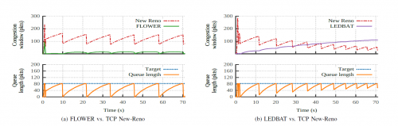

Simulation codes and software
This webpage provides source codes, scripts and data linked to my publications research.
Tetrys
Tetrys enables a new reliability algorithm specifically useful when retransmission is either problematic or not possible. In case of multimedia or multicast communications and in the context of the Delay Tolerant Networking (DTN), the classical retransmission schemes can be counterproductive in terms of data transfer performance or not possible when the acknowledgment path is not always available. Indeed, over long delay links, packets retransmission has a meaning of cost and must be minimized. The purpose of Tetrys is to propose a novel reliability mechanism with an implicit acknowledgment strategy that could be used either within these new DTN proposals, for multimedia traffic or in the context of multicast transport protocols. This proposal is based on a new on-the-fly erasure coding concept specifically designed to operate efficient reliable transfer over bi-directional links. Tetrys allows to unify a full reliability with an error correction scheme. Tetrys is not sensitive to the loss of acknowledgments while ensuring a faster data availability to the application compared to other traditional acknowledgment schemes.
See this paper for detail: On-the-Fly Coding for Time-Constrained Applications, in IEEE Transactions on Multimedia.
The code is now distributed by Speeryt.
Scheduling flows over LEO constellations on LMS channels
This code provides ns-2 sources and scripts to reproduce experiments driven in Bastien Tauran PhD thesis. A journal paper dealing with these experiments is currently under review. Full fading traces are available upon request.

Virtual Curves algorithm implementation and ns-2 experiments
This code provides ns-2 sources and scripts to reproduce experiments demonstrating VIRAL: coupling congestion control with fair video quality metric, allowing congestion controlled transport protocols to provide fairness in terms of both throughput and video quality. At this stage VIRAL is implemented inside TFRC protocol but should be compliant with any rate-based congestion control mechanisms that enable a smooth sending rate for multimedia applications.
iQAS: an integration platform for Quality of Information Assessment as a Service
iQAS is an integration platform for QoO Assessment as a Service. The platform is freely available here. Further details are provided in this paper.
VoIP QoE tool for OpenBACH
This code will be soon released as an OpenBACH job and is available for download here.
PSS Priority Switching Scheduler
Following our paper Improving RFC5865 Core Network Scheduling with a Burst Limiting Shaper, Priority Switching Scheduler (PSS) code has been released and is publicly available here.
FLOWER Fuzzy Lower-than-Best-Effort Transport Protocol
Among the different transport protocols providing a LBE service, Low Extra Delay Background Transport (LEDBAT) is the most used. LEDBAT is a delay-based congestion control protocol that has been standardized by the Internet Engineering Task Force (IETF). LEDBAT aims to exploit the remaining capacity while limiting the queuing delay around a predefined target which may be set up to 100 ms according to RFC 6817. Consequently, LEDBAT flows limits the amount of queuing delay introduced in the network and thus lower their impact on best-effort flows such as TCP. Despite being a widely deployed protocol, the two main LEDBAT parameters (i.e., target and gain) have been revealed to be complex to determine as their tuning highly depends on the network conditions and not dynamically configurable. Indeed, LEDBAT may become more aggressive than TCP in case of misconfiguration.

Our protocol, FLOWER (Fuzzy LOWer-than-Best-EffoRt Transport Protocol), is a promising alternative of LEDBAT. With FLOWER, we aim to overcome the LEDBAT shortcomings while still fulfilling its goals. The principal difference with LEDBAT is that FLOWER replaces the linear P-type controller (proportional controller) of LEDBAT by a fuzzy controller to modulate the congestion window.
FLOWER code is based on LEDBAT and TCP Vegas ns-2 implementations and is available for ns-2 and GNU/Linux here:
Please read FLOWER, an Innovative Fuzzy Lower-than-Best-Effort Transport Protocol for further details.
STAMP: Server Topologic Analysis by Message headers Parsing
STAMP builds a weight and oriented graph from an email database, an email log or just a simple email header, that allows to analyse email paths. The objective of this tool is to automatically perform an analysis of the SMTP topology. As an extension, the returned graph might help to develop methods (from graph theory, statistical analysis, ...) to identifying problems occurred.
For further details please read this.
STAMP code is available here:
P-XCP
The version of P-XCP ns-2 code of our paper Optimal Configuration for Satellite PEPs using a Reliable Service on Top of a Routers-Assisted Approach"> has been realized by Dino Lopez during his post-doc at ISAE and following this seminal paper: "P-XCP: A Transport Layer Protocol for Satellite IP Networks", Kaiyu Zhou et A., IEEE GLOBECOM 2004.
To install P-XCP inside your ns-2 simulator, replace tcp-newreno.cc, tcp-reno.cc, xcp-end-sys.cc, xcp-end-sys.h, xcp.cc, xcp.h, xcpq.cc, xcpq.h with the files provided here:
This code has been successfully tested with ns2.33.
Kohonen-RED
The ns-2 code of our paper Managing Congestion with a Kohonen-RED Queue is available here :